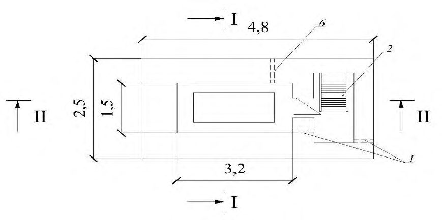
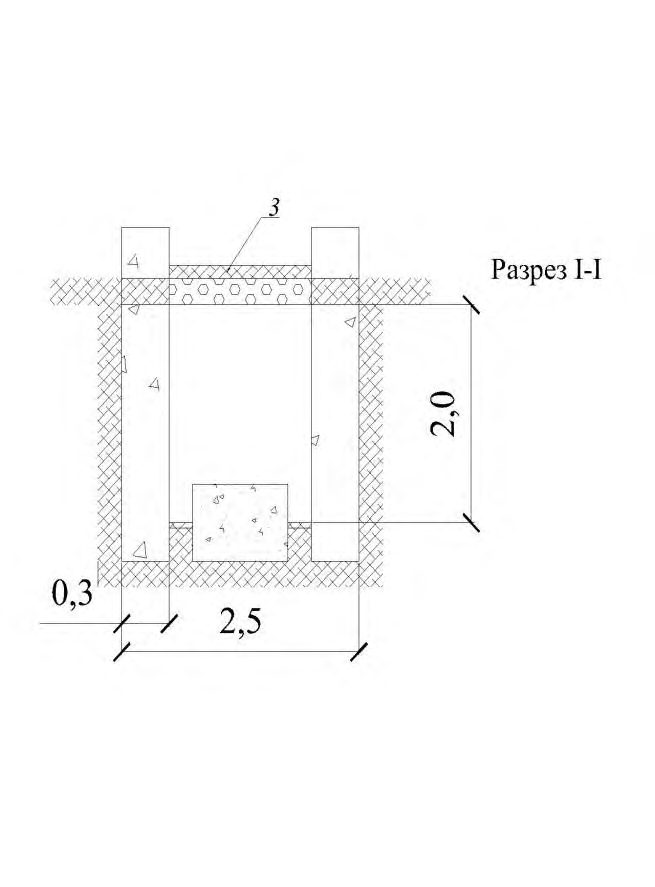

СП 330.1325800.2017 «Здания и сооружения в сейсмических районах. Правила проекти»
О документе: разработчики, утверждение, регистрация, ключевые слова
СВОД ПРАВИЛ
СП 330.1325800.2017
Издание официальное
Москва 2017
1 ИСПОЛНИТЕЛЬ - Акционерное общество «Центральный научно-исследовательский и проектно-экспериментальный институт промышленных зданий и сооружений» (АО «ЦНИИПромзданий»)
2 ВНЕСЕН Техническим комитетом по стандартизации ТК 465 «Строительство»
3 ПОДГОТОВЛЕН к утверждению Департаментом градостроительной деятельности и архитектуры Министерства строительства и жилищно-коммунального хозяйства Российской Федерации (Минстрой России)
- 4 УТВЕРЖДЕН Приказом Министерства строительства и жилищно-коммунального хозяйства Российской Федерации от 25 ноября 2017 г. № 1585/пр и введен в действие с 26 мая 2018 г.
5 ЗАРЕГИСТРИРОВАН Федеральным агентством по техническому регулированию и метрологии (Росстандарт)
6 ВВЕДЕН ВПЕРВЫЕ
В случае пересмотра (замены) или отмены настоящего свода правил соответствующее уведомление будет опубликовано в установленном порядке. Соответствующая информация, уведомление и тексты размещаются также в информационной системе общего пользования - на официальном сайте разработчика (Минстрой России) в сети Интернет
© Минстрой России, 2017
Настоящий нормативный документ не может быть полностью или частично воспроизведен, тиражирован и распространен в качестве официального издания на территории Российской Федерации без разрешения Минстроя России
Дата введения 2018-05-26
УДК
Ключевые слова: здания и сооружения в сейсмических районах, инженерно-сейсмометрическая станция, мониторинг, сейсмические колебания
Руководитель организации-разработчика
АО «ЦНИИПромзданий»
Генеральный директор,д.т.н
\_\_\_\_\_\_\_\_\_\_\_\_\_\_
В.В. Гранев
Главный специалист
\_\_\_\_\_\_\_\_\_\_\_\_\_\_
Д.А.Лысов
Главный специалист
\_\_\_\_\_\_\_\_\_\_\_\_\_\_
А.С.Денисов
Ответственный исполнитель
\_\_\_\_\_\_\_\_\_\_\_\_\_\_
В.И.Булыкин
Введение
Настоящий свод правил разработан в соответствии с Федеральным законом от 30 декабря 2009 г. № 384-ФЗ «Технический регламент о безопасности зданий и сооружений» и с учетом положений Федерального закона от 28 ноября 2011 г. № 337-ФЗ «О внесении изменений в Градостроительный кодекс Российской Федерации и отдельные законодательные акты Российской Федерации» в части требований к безопасной эксплуатации объекта капитального строительства.
Свод правил устанавливает требования, регламентирующие порядок проектирования инженерно-сейсмометрических станций для зданий и сооружений различного назначения, их состав и структуру, форму представления зарегистрированной информации, особенности эксплуатации инженерно-сейсмометрических станций, подходы к синхронизации регистраций на инженерно-сейсмометрических станциях, а также правила разработки раздела проектной документации «Требования к обеспечению безопасной эксплуатации объектов капитального строительства» в части обеспечения объекта инженерносейсмометрической станцией.
Работа выполнена авторским коллективом АО «ЦНИИПромзданий» - др техн. наук В.В Гранев , д-р техн. наук Э.Н. Кодыш , д-р техн. наук А.Н. Мамин , канд. техн. наук Д.А. Лысов , В.И. Булыкин , А.С. Денисов .
1Область применения
2Нормативные ссылки
В настоящем своде правил использованы нормативные ссылки на следующие документы:
ГОСТ Р 21.1101-2013 Система проектной документации для строительства. Основные требования к проектной и рабочей документации
ГОСТ 31937-2011 Здания и сооружения. Правила обследования и мониторинга технического состояния
ГОСТ 32019-2012 Мониторинг технического состояния уникальных зданий и сооружений. Правила проектирования и установки стационарных систем (станций) мониторинга
\_\_\_\_\_\_\_\_\_\_\_\_\_\_\_\_\_\_\_\_\_\_\_\_\_\_\_\_\_\_\_\_\_\_\_\_\_\_\_\_\_\_\_\_\_\_\_\_\_\_\_\_\_\_\_\_\_\_\_\_\_\_\_\_\_\_\_\_\_\_\_\_\_\_\_\_\_\_\_\_\_\_\_\_\_\_\_\_\_\_\_\_\_\_\_\_\_\_\_\_\_\_\_\_\_\_\_\_\_\_\_\_\_\_\_\_\_\_\_\_\_\_\_\_\_\_\_\_\_\_\_\_\_\_\_\_\_\_\_\_\_\_\_\_\_\_\_\_\_\_\_\_\_\_\_\_\_\_\_\_\_\_\_\_\_\_\_\_\_\_\_\_\_\_\_\_\_\_\_\_\_\_\_\_\_\_\_
Правила проектирования инженерно-сейсмометрических станций Buildings and constructions in seismic countries.
Rules of design of engineering and seismometric stations
ГОСТ Р 54859-2011 Здания и сооружения. Определение параметров основного тона собственных колебаний
СП 14.13330.2014 «СНиП II-7-81* Строительство в сейсмических районах» (с изменением №1)
Примечание - При пользовании настоящим сводом правил целесообразно проверить действие ссылочных документов в информационной системе общего пользования - на официальном сайте федерального органа исполнительной власти в сфере стандартизации в сети Интернет или по ежегодному информационному указателю «Национальные стандарты», который опубликован по состоянию на 1 января текущего года, и по выпускам ежемесячного информационного указателя «Национальные стандарты» за текущий год. Если заменен ссылочный документ, на который дана недатированная ссылка, то рекомендуется использовать действующую версию этого документа с учетом всех внесенных в данную версию изменений. Если заменен ссылочный документ, на который дана датированная ссылка, то рекомендуется использовать версию этого документа с указанным выше годом утверждения (принятия). Если после утверждения настоящего свода правил в ссылочный документ, на который дана датированная ссылка, внесено изменение, затрагивающее положение на которое дана ссылка, то это положение рекомендуется применять без учета данного изменения. Если ссылочный документ отменен без замены, то положение, в котором дана ссылка на него, рекомендуется применять в части, не затрагивающей эту ссылку. Сведения о действии сводов правил целесообразно проверить в Федеральном информационном фонде стандартов.
3Термины и определения
В настоящем своде правил применены термины по СП 14.13330, ГОСТ 31937, ГОСТ 32019, а также следующий термин с соответствующим определением:
- 3.1инженерно-сейсмометрическая станция (ИСС)
- Аппаратурный комплекс регистрации движения элементов здания или сооружения и участков прилегающего грунта при землетрясениях, объединяющий в единое целое сейсмометрическую аппаратуру (первичные преобразователи), установленную на элементах здания или сооружения, а также на грунте вблизи этого здания или сооружения, другую аппаратуру (при необходимости), аппаратуру и оборудование обрабатывающего центра, каналы связи.
4Общие положения
СП 330.1325800.2017
На инженерно-сейсмометрической станции также проводится автоматическое определение периода и логарифмического декремента основного тона собственных колебаний объекта в соответствии с ГОСТ Р 54859, в том числе после землетрясения. Станция может использоваться для мониторинга технического состояния здания или сооружения в соответствии с ГОСТ 32019.
- выдавать сигнал о превышении заданного уровня сейсмических колебаний
СП 330.1325800.2017 конструкций здания или сооружения и прилегающего грунта для различных систем безопасности объекта;
- получать информацию о динамическом поведении зданий и сооружений и о региональных сейсмических воздействиях для совершенствования методов расчета зданий и сооружений на сейсмостойкость и корректировки карт макросейсмической шкалы интенсивности сейсмических колебаний, а также сейсмомикрорайонирования;
- выдавать сигнал о степени изменения периода и логарифмического декремента основного тона собственных колебаний здания или сооружения, на котором она находится, сразу после сильного землетрясения для оперативного определения технического состояния объекта;
- устанавливать необходимость проведения обследования технического состояния здания или сооружения, на котором она установлена в соответствии с ГОСТ 31937-2011 (пункт 6.2.5);
- получать информацию о различных характеристиках строительных конструкций в соответствии с ГОСТ 32019 для анализа текущего технического состояния объекта.
СП 330.1325800.2017 сейсмометрических станций и/или автоматизированных станций мониторинга деформационного состояния зданий и сооружений.
При новом строительстве, реконструкции и капитальном ремонте зданий и сооружений, приведенных в 4.1, на них устанавливают инженерносейсмометрические станции в соответствии с разработанным проектом.
На других зданиях и сооружениях, в том числе представительных группах массовой застройки города, установка инженерно-сейсмометрических станций осуществляется по решению местных органов власти или собственников объектов.
СП 330.1325800.2017 колебаний на здании или сооружении записи движения элементов здания или сооружения и прилегающих участков грунта должны быть синхронизированы на всех измерительных пунктах.
5Требования к функциональному назначению инженерносейсмометрических станций
- цели проведения инженерно-сейсмометрических наблюдений;
- скорости протекания процессов и их изменение во времени;
- продолжительность измерений;
- ошибки измерений, в том числе за счет изменения состояния окружающей среды, а также влияния помех и аномалий природно-техногенного характера; - возможность обеспечения, при проведении длительных наблюдений и изменении внешних условий, либо стабильности системы измерений и параметров применяемых средств измерений, либо учета изменения условий и внесение соответствующих компенсационных поправок (температурных, влажностных и т. п.);
- возможность обеспечения достоверности получаемой информации для выдачи обоснованного заключения о текущем техническом состоянии здания или сооружения и краткосрочного прогноза о его состоянии на ближайший период;
- сопоставимость получаемых данных с расчетами и данными, ранее полученными для объекта.
СП 330.1325800.2017
СП 330.1325800.2017 измерение и результаты передаются в обрабатывающий центр станции. В нем данные по текущим динамическим параметрам здания или сооружения сравниваются с их предыдущим измерением и первоначальными значениями этих параметров и выдается информация о степени изменения этих динамических параметров и на этой основе о степени изменения технического состояния объекта. При этом возможен контроль изменения технического состояния объекта как в обычном режиме эксплуатации (в отсутствии землетрясения), так и сразу после землетрясения.
6Требования к структуре инженерно-сейсмометрических станций
- управления;
- сбора информации;
- обработки, хранения и анализа информации.
- автоматического контроля ситуации и определения режима работы;
- выработки команд;
- выдачи информации.
СП 330.1325800.2017
СП 330.1325800.2017 проектом данной инженерно-сейсмометрической станции.
- блок сбора информации;
- систему стационарных датчиков.
- обработки информации;
- хранения информации;
- анализа информации.
6.4.1Блок обработки информации преобразует информацию, полученную от блока сбора и передает ее в блок анализа и блок хранения.
СП 330.1325800.2017 или частично интегрирована со станцией мониторинга технического состояния здания или сооружения, определенной ГОСТ 32019.
7Требования к составу инженерно-сейсмометрических станций
- влияние элементов станции друг на друга, а также взаимное влияние элементов станции и объекта измерений должны быть пренебрежимо малы;
- собственные погрешности элементов станции должны быть малы по сравнению с измеряемыми значениями величин;
- применяемые для динамических измерений первичные преобразователи должны обладать равномерной амплитудно-частотной характеристикой в рабочем диапазоне, а также минимальной поперечной чувствительностью.
СП 330.1325800.2017 ближайшими частотами и минимальную частоту в разложении сигнала при его преобразовании для получения спектра.
СП 330.1325800.2017
СП 330.1325800.2017 инженерно-сейсмометрические станции выбирают между проводной и беспроводной системами связи.
СП 330.1325800.2017
8Режимы работы инженерно-сейсмометрических станций
СП 330.1325800.2017
Аналогичный переход на автономное питание должен предусматриваться в случаях аварий или временного прекращения подачи промышленной электроэнергии при отсутствии землетрясения.
9Требования к синхронизации регистраций на инженерносейсмометрических станциях
СП 330.1325800.2017
СП 330.1325800.2017 и в различных местах прилегающего грунта. По каналам связи электрические сигналы поступают на центральное регистрирующее устройство, в котором имеются единые отметчики времени и носитель информации, производящий регистрацию при переходе станции в оперативный режим работы.
При таком способе первичные преобразователи должны обладать высокой степенью защищенности как от самих сейсмических воздействий, так и от вторичных отрицательных явлений, порождаемых этими воздействиями, и иметь свои независимые автономные источники электропитания.
При отсутствии связей между первичными преобразователями, рассредоточения носителя информации и источников электропитания по зданию или сооружению, а также повышенной сейсмозащищенности носителей информации надежность децентрализованного способа регистрации выше по сравнению с централизованным.
- результаты наблюдений, произведенные отдельными первичными преобразователями независимы и не совмещены во времени;
- неодновременность включения первичных преобразователей станции, приводит к потере полезной информации, - так как акселерограф, установленный, например, на покрытии здания или сооружения, может уже значительную часть времени проработать, а акселерограф, установленный на грунте, еще не включиться.
10Требования к форме представления зарегистрированной информации
1) указания:
- места зарегистрированного землетрясения (наименование населенного пункта), номер инженерно-сейсмометрической станции;
- даты, времени зарегистрированного землетрясения;
2) записи колебаний конструкций и прилегающего грунта, с указанием номера пункта измерений на станции;
3) текущие значения периода и логарифмического декремента основного тона собственных колебаний объекта, на котором расположена инженерносейсмометрическая станция.
СП 330.1325800.2017
СП 330.1325800.2017 содержать в случае режима работы по сигналу оператора информацию, приведенную в ГОСТ 31937 и ГОСТ 32019.
11Требования к эксплуатации инженерно-сейсмометрических станций
12Содержание проектной документации инженерносейсмометрических станций
Раздел проектной документации «Требования к обеспечению безопасной эксплуатации объектов капитального строительства» в части размещения на объекте капитального строительства в предусмотренных настоящим сводом правил случаях инженерно-сейсмометрической станции и ее проектирования, должен содержать следующие подразделы.
- наименование документов, на основании которых ведется проектирование инженерно-сейсмометрической станции, их номера и даты;
- перечень нормативно-правовых и нормативно-технических документов, в соответствии с которыми ведется проектирование инженерно-сейсмометрической станции;
- термины и их определения;
- цели, задачи и назначение использования инженерно-сейсмометрической станции.
- общая характеристика местоположения объекта;
- объемно-планировочные решения;
- конструктивные решения объекта.
- цели, задачи и назначение инженерно-сейсмометрических наблюдений на конкретном объекте капитального строительства;
- перечень контролируемых конструкций, их частей и/или элементов, узлов и соединений;
- перечень контролируемых параметров;
- описание основных методологических принципов и способов решения поставленных задач;
- решения по численности, квалификации и функциям персонала инженерносейсмометрической станции, режимам работы, порядку взаимодействия;
- очередность создания инженерно-сейсмометрической станции и объем каждой очереди:
СП 330.1325800.2017 на стадии проектирования, на стадии выполнения строительно-монтажных работ, на стадии сдачи станции в эксплуатацию, в период эксплуатации объекта капитального строительства, оснащенного инженерно-сейсмометрической станцией;
- перечень видов работ, для которых необходимо составлять акты освидетельствования скрытых работ;
- мероприятия по подготовке объекта инженерно-сейсмометрического наблюдения к вводу станции в эксплуатацию: обучение и проверка квалификации персонала, создание необходимых подразделений и рабочих мест, мероприятия, исходящие из специфических особенностей объекта наблюдения и/или создаваемой инженерно-сейсмометрической станции;
- порядок внесения изменений в методику инженерно-сейсмометрического наблюдения.
- рекомендации по корректировке программы проведения инженерносейсмометрического наблюдения с учетом произошедших в процессе эксплуатации объекта капитального строительства изменений технического состояния конструкций;
- описание мероприятий, предпринимаемых при переходе объекта наблюдения в ограниченно работоспособное или аварийное техническое состояние.
- структурная схема инженерно-сейсмометрической станции;
- основные технические решения по структуре подсистем станции;
- описание технических средств станции;
- основные характеристики аппаратно-технических средств станции;
- описание процесса установки аппаратно-технических средств на объекте инженерно-сейсмометрического наблюдения;
- описание процессов обслуживания аппаратно-технических средств;
- описание программно-технических средств станции;
- требования к помещению диспетчерского пункта объекта наблюдения, где располагается автоматизированное рабочее место инженерно-сейсмометрической станции;
- требования к техническим характеристикам автоматизированного рабочего места станции;
- решения по системе связи между аппаратно-техническими средствами станции и автоматизированным рабочим местом диспетчерского пункта;
- основные характеристики системы связи станции;
- требования к энергоснабжению.
- всех функций инженерно-сейсмометрической станции;
- режимов функционирования;
- функций, выполняемых станцией в автоматическом режиме;
- взаимосвязи инженерно-сейсмометрической станции с другими системами объекта наблюдения (мониторинга технического состояния, автоматизации, управления и т. д.);
СП 330.1325800.2017 станцией. В приложении Б приведен пример заключения, формируемого станцией по факту регистрации землетрясения.
- ведомость рабочих чертежей;
- план расположения аппаратно-технических средств инженерносейсмометрической станции;
- схемы прокладки линий связи между аппаратно-техническими средствами и диспетчерским пунктом станции;
- требования к местам прокладки линий связи;
- таблица соединений и подключений;
- конструкторские чертежи по устройству измерительных пунктов для размещения аппаратно-технических средств станции.
- ведомость оборудования и материалов;
- спецификация оборудования;
- локальные и сводная сметы.
Проектная документация выпускается в соответствии с ГОСТ Р 21.1101.
На основании описания состава инженерно-сейсмометрической станции (ИСС) составляют ее паспорт, форма которого приведена в приложении А.
АПриложение А. Паспорт инженерно-сейсмометрической станции
\_\_\_\_\_\_\_\_\_\_\_\_\_\_\_\_\_\_\_\_\_\_
(министерство, ведомство)
\_\_\_\_\_\_\_\_\_\_\_\_\_\_\_\_\_\_\_\_\_\_\_\_
(наименование организации)
ПАСПОРТ
инженерно-сейсмометрической станции (ИСС) №\_\_\_\_\_\_\_\_\_\_\_\_
( )
(адрес ИСС)
| Наименование показателя | Характеристика показателя |
|---|---|
| 1 Здания (сооружения) | |
| 1.1 Наименование объекта | |
| 1.2 Проект | |
| 1.3 Общие габариты здания или сооружения (длина, ширина, высота) | |
| 1.4 Количество этажей | |
| 1.5 Количество секций | |
| 1.6 Ориентация продольной оси здания (сооружения) относительно оси С-Ю | |
| 1.7 Наличие подвалов, полуподвалов | |
| 2 Несущие конструкции | |
| 2.1 Фундаменты | |
| 2.2 Цоколь | |
| 2.3 Стены или каркас (расстояния между продольными и поперечными осями стен, ширина простенков, ширина проемов, выступы (изломы) стен в плане и др.) | |
| 2.4 Перекрытия | |
| 2.5 Перемычки | |
| 2.6 Лестницы | |
| 3 Ненесущие конструкции |
УТВЕРЖДАЮ
Руководитель \_\_\_\_\_\_\_\_\_\_\_\_\_\_\_\_\_\_\_\_\_\_\_\_\_\_\_\_\_\_\_
(наименование организации)
\_\_\_\_\_\_\_\_\_\_\_\_\_\_\_\_\_\_\_\_\_ \ \_\_\_\_\_\_\_\_\_\_\_\_\_\_\_\_\_\_\_\_\_\_\_\_
(личная подпись) (фамилия, инициалы)
«\_\_\_»\_\_\_\_\_\_\_\_\_\_\_\_\_\_\_\_\_ 20\_\_ г. м.п.
| 3.1 Ограждающие конструкции |
|---|
| 3.2 Перегородки |
| 3.3 Веранды |
| 3.4 Крыша |
| 3.5 Элементы здания, выступающие из плоскости стен (карнизы, парапеты, фронтоны, колоннады и др.) |
| 4 Антисейсмические мероприятия |
| 5 Динамические параметры здания (периоды собственных колебаний и логарифмические декременты колебаний вдоль главных осей) |
| 6 Инженерно-геологические условия площадки строительства |
| 6.1 Сейсмичность площадки строительства по данным микросейсморайонирования |
| 6.2 Грунтовые условия строительства (просадочные, непросадочные грунты) |
| 6.3 Влажность и пористость грунтов |
| 6.4 Противопросадочные мероприятия |
| 7 Техническое оснащение станции |
| 7.1 Состав станции |
| 7.2 Распределение сейсмометрических каналов по измерительным пунктам |
| 7.3 Нестандартное оборудование станции |
Приложения
- 1 Общий вид, план типового этажа, разрез здания, генплан.
- 2 Геологический разрез площадки строительства и физико-механические свойства верхних слоев.
- 3 Схема размещения измерительных пунктов на здании (сооружении) с указанием их номеров, а также место нахождения регистрационного помещения.
- 4 Примечание.
БПриложение Б. Заключение по зарегистрированному инженерно-сейсмометрической
станцией землетрясению
Населенный пункт \_\_\_\_\_\_\_\_\_\_\_\_\_ Дата (число, месяц, год) \_\_\_\_\_\_\_\_\_
Время (часы, минуты) \_\_\_\_\_\_ Номер станции ИСС\_\_\_\_\_\_\_\_\_\_\_\_\_
Значение периода основного тона колебаний на момент формирования данного заключения \_\_\_\_\_\_\_\_\_\_, логарифмического декремента \_\_\_\_\_\_\_\_\_.
Записи зарегистрированных колебаний прилагаются.
Руководитель организации, \_\_\_\_\_\_\_\_ \_\_\_\_\_\_\_\_\_\_\_\_\_\_ эксплуатирующей станцию личная подпись инициалы, фамилия
Ответственный исполнитель
\_\_\_\_\_\_\_\_ \_\_\_\_\_\_\_\_\_\_\_\_\_\_ личная подпись инициалы, фамилия
ВПриложение В. Схема измерительного пункта на грунте


Примечание - Рекомендуется провести мероприятия по гидроизоляции.
1 - цементные трубы для коммуникационного кабеля; 2 - стремянка; 3 - плита перекрытия, утеплитель, рубероидный ковер; 4 - люк; 5 - бутобетон; 6 - вентиляционная труба
Рисунок В.1 - Схема измерительного пункта на грунте
\_\_\_\_\_\_\_\_\_\_\_\_\_\_\_\_\_\_\_\_\_\_\_\_\_\_\_\_\_\_\_\_\_\_\_\_\_\_\_\_\_\_\_\_\_\_\_\_\_\_\_\_\_\_\_\_\_\_\_\_\_\_\_\_\_\_\_\_\_\_\_\_\_\_\_\_\_\_\_\_\_